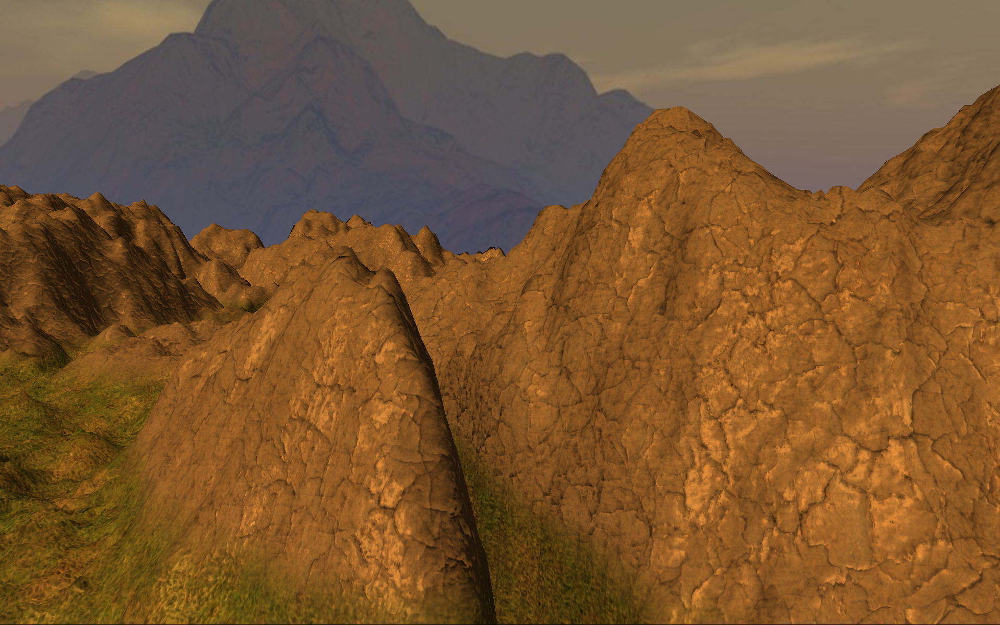
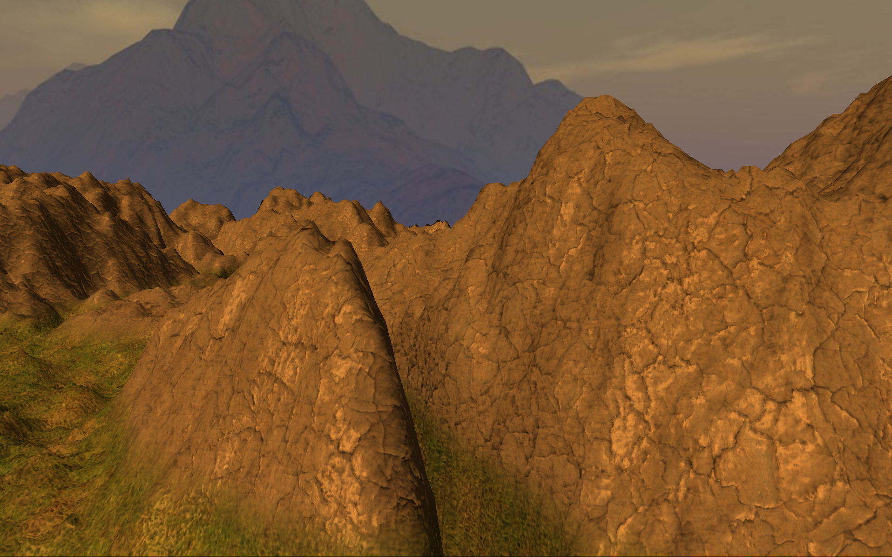
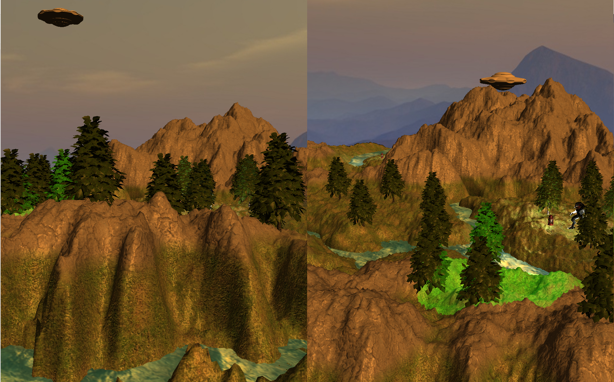
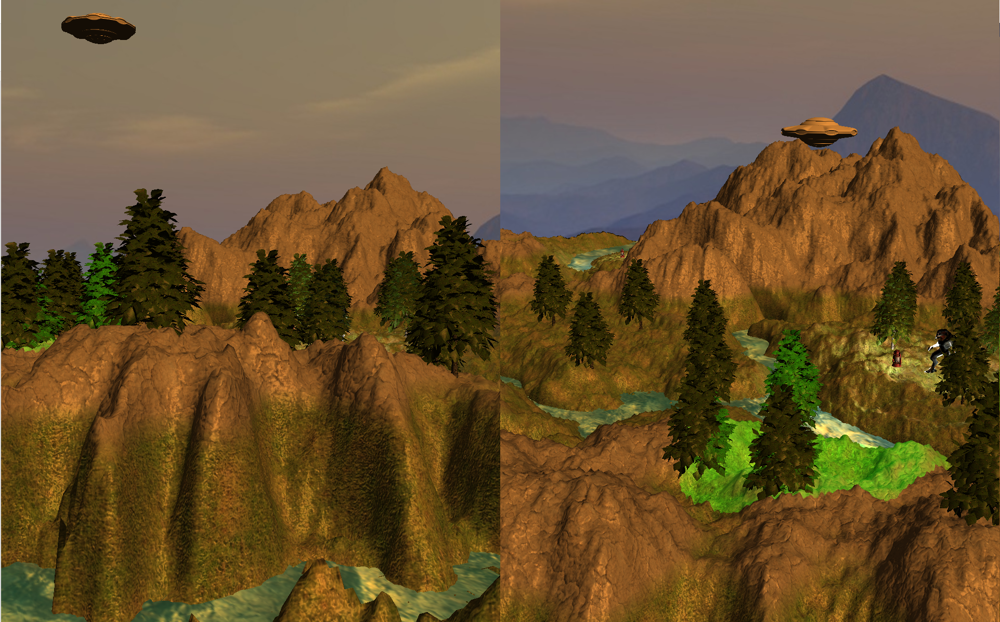

James Charsley
4D Visualisation
CSC8498 - Project for MComp
Introduction
This was the final project of my degree. The aim of this project was to compare different visualisations for rendering interactive 4D objects in real-time. This was done using C++ and OpenGL using Newcastle University's graphics framework, NCLGL.
Two different methods of visualisation were implemented, a wireframe projection through the use of 5x5 transformation matrices similar to how 3D projection is performed, and a 3D cross-section, through the use of the geometry shader.
What I Learnt
Throughout this project, I learnt a great deal with regards to 4D geometry, different ways of visualising higher dimensional geometry, as well as some of the mathematics than underpin 4D geometry. This has encouraged me to continue investigating various ways 4D visualisation could be extended. I have also expanded my knowledge of the OpenGL API, including additional primitives that I was not aware of and various use cases for them, as well as use of the geometry shader. This knowledge can also be taken outside of the scope of this project and applied in future projects.
Video
 

 



Implementation
Yet To Be Completed
Future Work / Possible Extensions
- The first aspect I will extend is to include additional graphical techniques, such as the use of 3D textures, skyboxes and possibly bumpmaps, in particular with the cross section approach.
- I would like to investigate alternative methods of visualisation, as this project only implemented two. In particular, several approaches could be implemented using ray marching.
- I would like to add some simple physics/collision detection to the program, extending it to a simple game similar to Meigakure or Brane (previously tetraspace).
- Lastly, I would like to try to implement this within an existing engine, such as Unity or Unreal Engine.